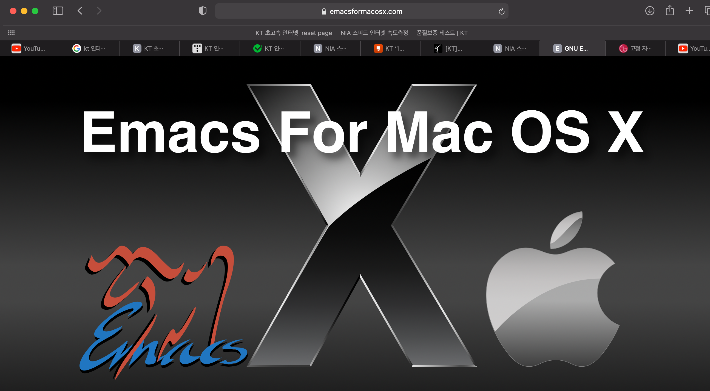
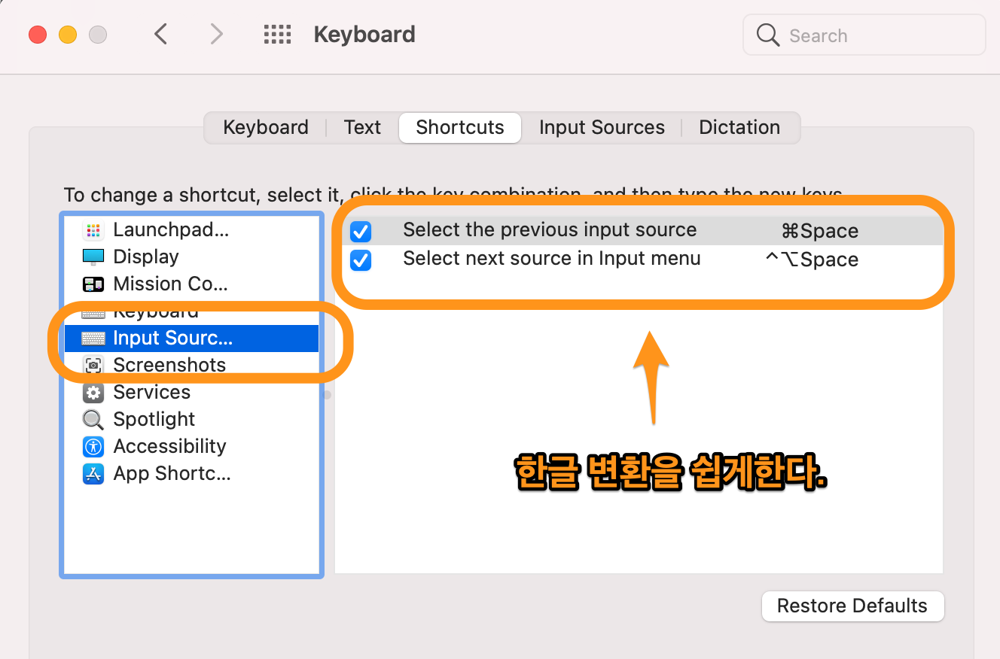
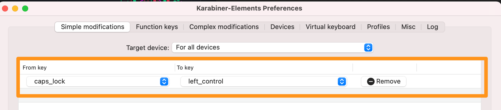
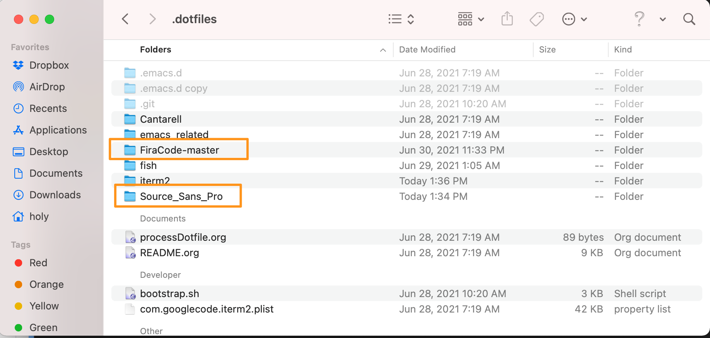
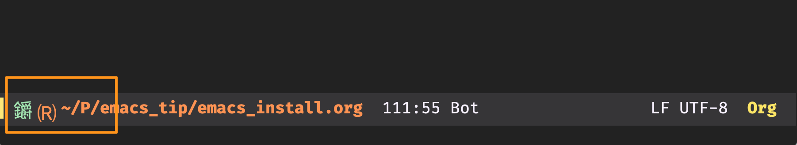
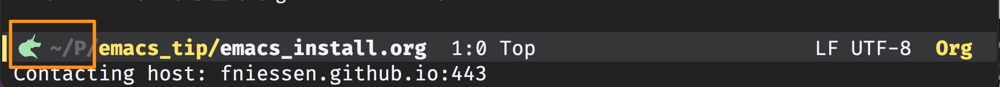

이맥스 설치와 실행
Table of Contents
1 OSX에서 Emacs 설치본에 대해서
실행파일은 일반적으로 cpu architecture binary다. 사용자의 입력이 필요할 경우, interface가 추가된 실행파일이 사용된다. interface는 system이 GUI일 경우, GUI interface가 추가된 실행파일이 사용되고, terminal일 경우, terminal interface가 추가된 실행파일이 사용된다. MacOS의 경우 실행파일이 2종류가 있다. GUI Emacs와 Terminal Emacs이다. GUI Emacs는 app의 형태를 갖고, Terminal Emacs는 Terminal command로 존재한다.
제공되는 emacs 설치본은 4가지가 있다.
- brew install emacs
Terminal Emacs를 설치한다. built-in Emacs로 /usr/local/Cellar/emacs에 설치되며, /usr/local/bin에 stubborn이 있다. terminal에서만 실행가능하다. app이 제공되지 않아서 launchpad에서는 실행할 수 없다. gnu emacs와 동일한 바닐라 emacs다. - brew –cask install emacs
GUI Emacs를 설치한다. /Applications/Emacs.app에 설치되며 launchpad에서 icon을 눌러 실행할 수 있다. EmacsForMacosx 에서 다운 받는 버전과 동일하다. terminal UI는 지원하지 않는다. launchpad가 아닌 terminal에서 Emacs app을 실행할수 있다. gnu vanilla emacs다. - Aquamacs
GUI emacs 별도로 customizing되어 있다. - emacs mac ports
GUI emacs, org-protocol, org-capture를 사용할 수 있다고 한다.
2 emacs install (EmacsForMacOsx)

Figure 1: emacs for mac osx
emacsformacosx를 설치하는 이유는 mac에서 app으로 실행할 수 있고, terminal에서 shell script를 사용해서 app을 실행시킬수 있기 때문이다. aquamacs와 macportemacs도 gui emacs이지만, gnu의 바닐라 emacs가 아닌 약간의 tunning을 거친 emacs라 제외했다.
3 built-in emacs를 삭제한다.
EmacsForMacosx를 설치하기 전에 해야 할께 있다. osx를 처음 설치하면, defaut emacs가 설치되어 있는데, 우선 /usr/local/bin을 보자. emacs와 emacsclient를 볼 수 있다. 이 emacs는 terminal ui를 갖는 emacs다. 나는 Gui emacs를 사용할것이기 때문에 사용하지 않는다. 그래서 지워 보자. brew uninstall emacs 를 하면 어떻게 삭제하는지 알려준다.
4 emacs for mac osx 설정
이제 emacs for mac osx를 설치했기 때문에 launchpad에 보면 emacs.app icon을 볼 수 있다. terminal에서 emacs app을 사용하기 위해서 해야할 것들이 있다.
4.1 emacs script
emacs라는 shell script를 /usr/local/bin에 만든다.
#!/bin/sh /Applications/Emacs.app/Contents/MacOS/Emacs "$@"
4.2 emacsclient
emacsclient를 /usr/local/bin에 link한다.
ln -s /Applications/Emacs.app/Contents/MacOS/bin/emacsclient /usr/local/bin
이제 emacs와 emacsclient를 terminal에서 사용할 수 있게 되었다. emacsclient가 무엇인지는 나중에 설명하겠다.
5 Emacs Settings
5.1 input source settings
한글 입력을 위한 변환키 설정을 C-space로 하는데, system preference->keyboards->shortcut에서 설정 한다.

Figure 2: trans korean
5.2 caps-lock to left control
keyboard의 caps는 control로 많이 사용된다. 이것은 karabiner로 세팅한다.

Figure 3: karabiner settings
5.3 font settings
emacs에서 사용하는 font가 variable pitch와 fixed pitch가 있는데, variable pitch로 source code pro를 사용하고 fixed-pitch로 fira-code를 사용한다. 설치가 안되어 있다면 설치를 해야 한다. .dotfiles폴더에 넣어놓았다. 두 개를 설치한다.

Figure 4: font settings
5.4 icon 문제
emacs를 실행하면 아래와 같이 하단에 icon이 깨지는 문제가 있다.

Figure 5: icon
이 문제를 해결하기 위해서 M-x all-the-icons-install로 icon을 설치해준다. 설치하고 다시 실행하면 아래와 같이 보이는 것을 확인할 수 있다.

Figure 6: icon2
6 Emacs Deamon & Server
6.1 Daemon과 server
우선 Daemon과 server를 구분할 필요가 있다.
- Daemon : 시스템에 상주하는 process, 종료하지 않는데, 내부적으로 무한 loop을 돌고 있다고 생각하면 된다. 예전에는 network service를 하는 server들이 모두 Daemon이기에 server들을 daemon이라고 불렀다.
- Server : Daemon이지만 client의 접속을 받아들인다. 모든 daemon이 client의 요청을 처리하지 않는다. Daemon이면서 client의 요청을 처리하는 process를 server라고 한다.
- emacs daemon: emacs daemon은 2가지가 있다. –fg-daemon, –bg-daemon이다. fg는 forground여서 terminal에서 실행하면 prompt를 반환하지 않고, error나 warning이 console에 출력 된다. 반면 background로 실행되면 prompt가 바로 반환되게 되고 background로 돌게 된다. emacs daemon은 계속 system에서 돌뿐이지, server 역할은 하지 않는다. client가 접속할 수 없다.
- emacs Server : emacs server는 emacs 초기화 설정파일인 init.el에 (server-start)를 기술하면 된다. emacs를 실행하면, GUI emacs instance가 생성되고 server역할을 하게 된다. 즉 client가 접속할 수 있다.
- emacsclient: emacs는 자체적인 gui instance는 없다. emacs instance처럼 init.el을 실행하지도 않는다. server가 없다면 실행도 되지 않는다.
6.2 Emacs Deamon(server) 와 client의 사용법
- init.el에 (server-start)를 기술한다.
- emacs –bg-daemon으로 실행한다.
그냥 emacs를 실행 시키면 server역할을 하지만, 문제가 gui instance가 생성된다는 것이다. 나는 server는 background로 실행하고 emacsclient로 연결해서 사용할 것이기 때문에 daemon으로 실행한다. - emacsclient -nc
(no wait를 하는것은 바로 연결된다. 정확한 의미는 모르겠다. –create frame은 frame을 만들어준다.)